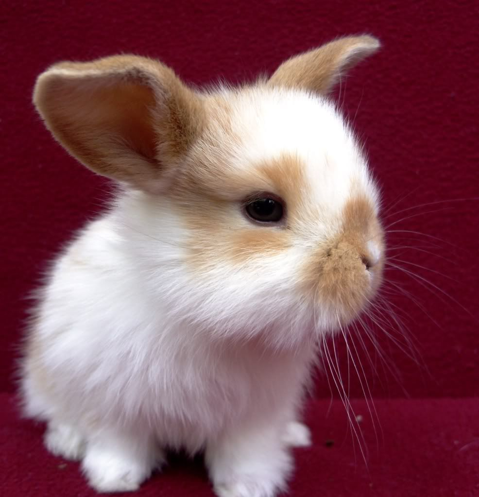
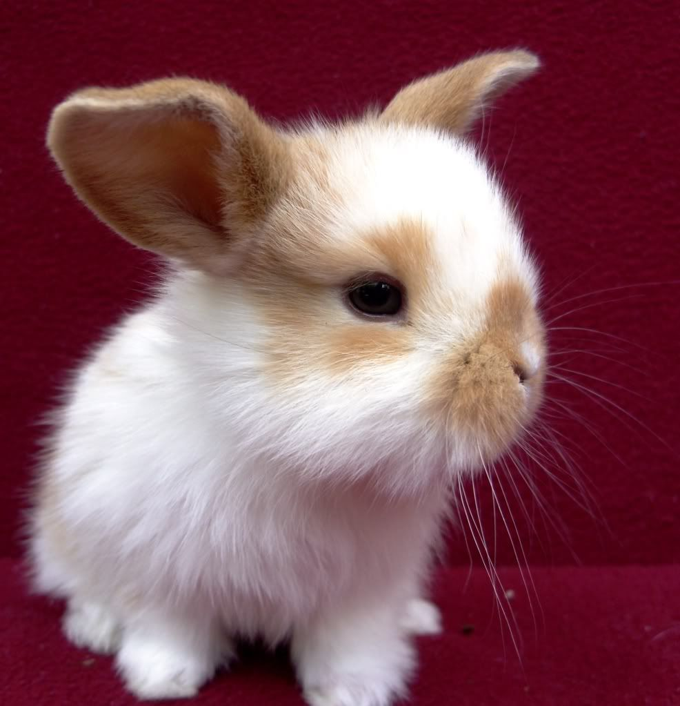

Ter um gatinho em casa é o sonho de muitas pessoas. Um animal companheiro, carinhoso, mas que tem sua
independência, o que torna os cuidados do dia a dia mais tranquilos.
Mas como adotar um gato? Onde encontrar seu novo pet e quais os próximos passos depois que o bichano
estiver em sua casa?
Para te ajudar com a adoção, preparamos um guia com informações importantes. Veja só!
Além de todos os benefícios que um gatinho pode trazer à sua casa, como o amor e a energia de um novo
membro da família, adotar um gato é benéfico também para o animal.
O número de felinos abandonados no Brasil, que vivem atualmente nas ruas ou em instituições
especializadas em animais, é lastimável – estima-se cerca de 10 milhões, segundo dados da OMS.
No caso dos gatos pretos e com idade avançada, a situação é ainda mais preocupante. Crenças
culturais fazem com que esses animais sejam mais rejeitados durante as adoções e tenham uma vida mais
difícil que outros gatinhos.
Por isso, adotar (e não comprar) é um ato de solidariedade, que fará bem tanto para você quanto para
o gatinho.
Existem inúmeros locais para fazer a adoção de gato filhote ou adulto pelo Brasil. Procure um abrigo
de animais ou organizações
protetoras, ONGs e feirinhas de adoção de gato em sua cidade.
Pelas redes sociais também é possível encontrar eventos de adoção ou perfis especializados. Ao
encontrar uma organização próxima
a você, pesquise bem as referências e visite o espaço para escolher um animal com as características
que você deseja.
Passe um tempo com ele, faça perguntas aos responsáveis para conhecer mais sobre o comportamento do
gato, como ele reage a outros
animais, crianças ou pessoas desconhecidas, dentre outros detalhes.
Atualmente, também é possível fazer o processo de adoção totalmente online. Consulte sites
especializados, como “Adote um Gatinho”,
“Amigo não se compra”, “Cão Viver” e outros.
 

A adoção de cachorro é um ato de amor. Afinal, acolher um cãozinho abandonado vai trazer amor tanto para a vida dele,
que vai ganhar uma família, quanto para a sua, que vai ter o afeto e companhia de um animal eternamente grato.
Mas a adoção de cachorro é também um ato de responsabilidade social. Segundo dados da Organização Mundial da Saúde (OMS),
o número de animais abandonados no Brasil chega a 30 milhões. Entre eles, 20 milhões são cachorros. Tirar um deles da
rua ou de organizações que os resgatam ajuda a diminuir um grande problema no país.
Se você tem vontade de se tornar mãe ou pai de um cachorro, este texto vai te ajudar a tomar a decisão, a encontrar seu
cãozinho (ou cãezinhos!) e a cuidar dele, desde os primeiros momentos até os desafios do dia a dia. Confira!
Um cachorro que está para adoção em organizações ou abandonado na rua não tem uma vida fácil. Cães precisam do amor
e dos cuidados de uma família, com quem possam compartilhar o dia a dia. Tirar um peludo de uma situação assim é,
antes de tudo, salvar uma vida.
Cães disponíveis para adoção geralmente não têm uma raça definida. Existem estudos que mostram que nossos queridos
vira-latas têm menos tendência a desenvolver uma série de doenças e, portanto, costumam ser mais saudáveis.
Quer algo melhor que isso?
As raças de cachorro são cheias de restrições. Os vira-latas, por outro lado, são flexíveis e se adaptam facilmente
a novos ambientes e situações. Em todo caso, é possível, com um pouco mais de dificuldade, encontrar raças de cachorro para adoção.
Além disso ter um cachorro em casa ajuda a diminuir o estresse
A primeira coisa que você tem que fazer para entender melhor como adotar um cachorro é entrar em contato ou visitar ONGs ou o Centro de Controle de Zoonoses da sua cidade. Como cada local tem procedimentos diferentes, eles poderão te orientar melhor.
Coelhos são animais super companheiros, brincalhões e que não exigem muito espaço para cuidar e garantir seu bem-estar.
No entanto, muita gente tem dúvida sobre como funciona a adoção de coelhos e onde encontrar ONGs que tenham esse tipo de
pet disponível.
Pensando nisso, preparamos um conteúdo completo a fim de explicar o processo de adoção de coelhos em diferentes locais.
Assim, você pode ter um peludo sem grandes complicações. Continue lendo para saber mais!
Alimentação - A ração e comida para coelhos não é cara. Eles comem o tempo todo, mas comem pouco. Eles ficam tranquilos na gaiola sozinhos durante o dia e esperam uma interação, um carinho, quando você chega. Eles também podem se dar bem com cães e gatos. Higiênicos- Eles defecam tanto quanto comem – o tempo todo. Mas são bem disciplinados e aprendem fácil a usar o banheirinho.
Não sabe onde encontrar coelhos para adotar? Não se preocupe. Por mais que pareça difícil, a adoção é um processo muito simples.
Isso porque existem diversos locais que disponibilizam o animal para adoção sem grandes dificuldades.
Então, se estiver pensando em adotar coelho, converse primeiro com quem já tem um. Conheça as dificuldades de ter um peludo
para não correr o risco de se arrepender. De preferência, opte por ONGs de adoção cujos animais provavelmente foram abandonados
e precisam de um novo tutor.
No entanto, algumas ONGs podem pedir um valor para a taxa de adoção. Mas é um valor simbólico que ajuda a manter o local e que,
mesmo assim, não é suficiente para arcar com os gastos de reabilitação de animais debilitados e que sofreram maus-tratos.
A adoção de coelhos não só impede que o animal fique sem um tutor por muito tempo como também descongestiona ONGs do país
inteiro, dando, assim, a chance para que outros pets em situação de rua sejam resgatados e cuidados até terem um novo tutor para amar.